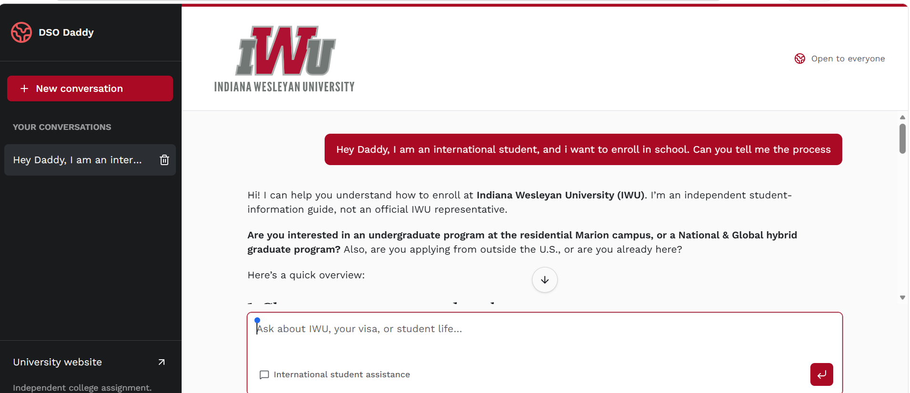

DSO Daddy:
AI-powered student support.
A human-centered chatbot prototype exploring how conversational AI might make common international-student questions easier to navigate.
Independent student project, not an official Indiana Wesleyan University service. Information about immigration is not legal advice; confirm requirements with your DSO and appropriate official sources.
Information is only useful when people can find it.
International students often have questions about travel, school transfers, work authorization, and F-1 status. Our group selected this topic because members had firsthand experience navigating immigration-related questions. We wanted to explore a conversational starting point for students, while recognizing that individual cases still require guidance from qualified university staff or legal professionals.
Design a useful first stop—not a replacement for a DSO.
Our objective was to explore an AI-supported chatbot that could help students formulate questions and locate general guidance about F-1 student processes, with a focus on CPT, OPT, travel, and transfers. The project also provided an opportunity to compare AI responses and consider how disclaimers and escalation to human experts should work.
Choosing tools for the problem.
Selected platform for building and sharing the chatbot prototype. The subscription requirement was a practical trade-off.
AI platforms compared during early exploration using a shared question about OPT travel documentation.
Alternative chatbot platform explored by a group member during development.
Government and Indiana Wesleyan University documents used for qualitative response checking during development.
From shared experience to prototype.
Ideation
We brainstormed multiple concepts, including a fitness assistant, before choosing a DSO-focused chatbot based on our group's experience and perceived student need.
AI exploration
Our group tested ChatGPT, Claude, and Copilot with the same initial question: “What documents are needed for travel on OPT?” Three of us collaborated on the chatbot and iterated on prompts to make responses more useful and clear. We discussed the importance of qualifying immigration-related responses.
Platform experimentation
Group members explored Lovable and Chatbase alongside other AI tools. We preferred Lovable for the application we were able to produce. One trade-off was its subscription requirement; a classmate already had access, which made it feasible for our group to use.
Shareable application
The group produced a guest-accessible application. The public page identifies the project as independent coursework rather than an official university service.
Explore the working interface.

DSO Daddy · Guest access
Open the team's external prototype to see the current interface. Availability and responses may change as the app is maintained.
Open chatbot ↗The live application and screenshot provide direct evidence of the team-built prototype.
Checking accuracy, tone, and conversational boundaries.
We conducted hands-on, qualitative testing to understand how the chatbot responded to different situations. These findings reflect qualitative observations rather than quantified performance results.
Source comparison
We checked immigration-related answers against government guidance and Indiana Wesleyan University documents available during development, aiming for responses that were accurate and up to date at that time. This was not an exhaustive legal review.
Conversation ending
We tested whether saying goodbye would end the interaction. The chatbot continued to allow conversation rather than automatically closing it, revealing an opportunity to improve the user experience.
Challenging user tone
I tested deliberately rude messages. The chatbot did not engage with the insults and instead stayed focused on offering guidance for the underlying question.
Helpful answers require clear boundaries.
Because immigration questions can have significant consequences, our group included a disclaimer and emphasized consulting a DSO or immigration lawyer when appropriate. During development, we compared answers with government information and Indiana Wesleyan University documents, but this does not guarantee ongoing accuracy as rules and institutional guidance change. A responsible future version would cite dated official sources, minimize personal data collection, and escalate uncertain or individual cases to qualified staff.
Designing for real users.
This section describes the value of the chatbot to its users; my personal professional value proposition is on the homepage.
Unique value: The concept emerged from our lived familiarity with international-student processes, rather than from technology alone. Having experienced the uncertainty of arriving in the U.S. as an international student and navigating requirements over time, I wanted to help students facing similar questions now and in the future. Professional relevance: The project connects user research, product thinking, AI tool exploration, communication, and change adoption—skills relevant to both consulting and applied AI work.
What we built—and what remains to test.
The team produced a guest-accessible Lovable chatbot and tested responses against government information and Indiana Wesleyan University documents available during development. We also explored conversation-ending behavior and how the assistant responded to rude language. These were qualitative checks, not a formal accuracy benchmark; no measured accuracy rate is claimed. Lovable was our preferred development platform, although its subscription requirement was a limitation. Future improvements include documented test cases, dated source checks, user feedback, and clearer conversation-ending behavior.
Team project documentation.
Based on Group 3's “Assignment 1.4 AI Lab” notes and the team's published application. The work was collaborative. My contributions included brainstorming the concept, working with two teammates on chatbot development and prompt refinement, and comparing AI platform options. Example immigration statements in the original notes are not reproduced as verified legal guidance.